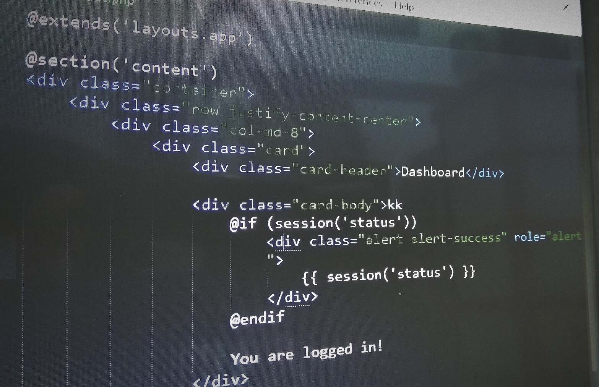
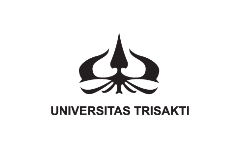
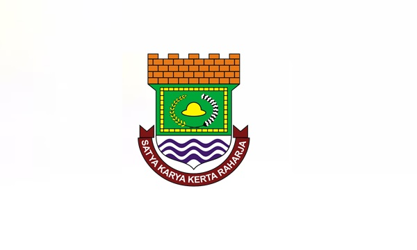

Website

Itu Pemrograman Web?
Web Programming atau Pemrograman Web merupakan istilah yang erat kaitannya dengan internet dan website.
Memang benar, karena pemrograman web merupakan suatu proses pembuatan website untuk keperluan internet.
Orang banyak mengenal web dengan istilah WWW atau World Wide Web.
World Wide Web adalah halaman-halaman website yang terkoneksi satu dengan lainnya atau disebut juga dengan hyperlink yang membentuk samudera informasi yang berjalan dengan protokol HyperText Transfer Protocol (HTTP).
Baca Lebih Lanjut
Bangkit 2021

Ditjen Dikti bersama Google, Gojek, Tokopedia dan Traveloka bekerjasama menyelenggarakan program Bangun Kualitas Manusia Indonesia (Bangkit).
Bangkit merupakan program pembinaan 3000 talenta digital terampil guna menyiapkan sembilan juta talenta digital terampil pada tahun 2030 mendatang.
Program ini ditawarkan kepada mahasiswa di seluruh perguruan tinggi Indonesia untuk dapat mengimplementasikan Kampus Merdeka melalui studi/proyek independen untuk mendapatkan kompetensi di bidang machine learning, mobile development, dan cloud computing.
Baca Lebih Lanjut
Tentang
Tentang Penulis
Penulis Merupakan Mahasiswa Trisakti yang saat ini sedang menempuh semester 6. Penulis Bertempat tinggal di Tangerang.
Berikut adalah sekilas mengenai Trisakti dan Tangerang
Tentang Trisakti

Nama Universitas Trisakti diberikan oleh Dr. Ir. Soekarno, Presiden Republik Indonesia pada waktu itu. Makna Trisakti diambil dari pidato Dr. Ir. Soekarno, yaitu berdaulat dibidang politik, berdikari dibidang ekonomi dan berkepribadian dalam kebudayaan.
Landasan inilah yang menjadi tonggak upaya Universitas Trisakti untuk ikut mencerdaskan anak bangsa dalam berbagai aspek, seperti kecerdasan intelektual, emosional, spiritual dan kepekaan sosial terhadap sesama, memacu kearifan dan keadilan.
Baca Lebih Lanjut
Tentang Tangerang

Kabupaten Tangerang adalah kabupaten yang berada di wilayah Tatar Pasundan, Provinsi Banten, Indonesia. Kabupaten Tangerang ini terbagi 29 kecamatan, 28 kelurahan dan 246 desa. Ibu kotanya adalah Tigaraksa.
Kabupaten ini terletak tepat di sebelah barat DKI Jakarta.
Baca Lebih Lanjut